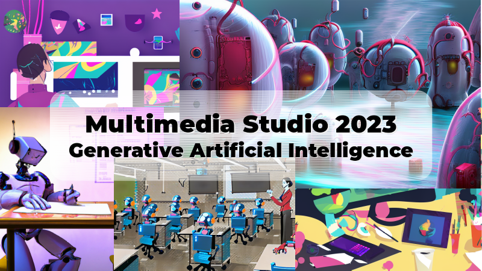

Educator’s multimedia studio
Educational Technology 0858-620, Spring 2023

Keywords: studio pedagogy, interaction design, multimedia learning, digital studio, ed tech capstone, instructional design, school segregation, urban education, urban technology
Description: How can digital media best support learning? Working on semester-long projects, students learn about interaction and instructional design. In this hands-on studio, develop and extend skills in multimedia authoring: digital images/audio/video, and interactive web development. Apply these skills to create a original educational resources.
Class meetings:
This asynchronous online class will be run on a Thursday-Wednesday schedule, with new weekly assignments beginning on Thursday morning with completion dates by end of day Wednesday. In addition to the Moodle course website, we will use Slack as a required tool for this course with many of the class discussions taking place on Slack. If you are not a member of our Slack yet, you can find the invitation on the course website.
Instructor: Matthew X. Curinga, mcuringa@adelphi.edu
Office hours: (online)
- Monday 3-5pm
- Wednesday 2:30-4:30pm
- office hours by appointment
What is a multimedia studio?
Each semester the multimedia studio features a different challenge, dealing with an important, global topic. Students will be asked to work on a semester long multimedia project that teaches some aspect of this challenge.
The Spring 2023 Studio theme is generative artificial intelligence. Generative AI refers to using computers to generate new work. Current examples include computer generated images, video, news headlines, fiction, essays, computer code, and much more. Our goal, in the studio, will be to create multimedia learning materials that help us (as a society) to better understand the technology behind this type of AI and to explore the social, ethical, poltical, and economic implications of this new tech.
Goals
This course is designed to challenge students to develop their abilities as instructional designers and as authors and producers of digital media for learning. Specifically, they should learn to:
- design an effective digital learning environment that is intuitive to use and follows principles of Universal Design for Learning
- develop in-depth skill in one area of digital production: video editing, graphic design, game design, computer programming, web design, etc.
- understand key concepts of instructional design, including meeting the needs of the target audience, assessing learning outcomes, and following sound and ethical pedagogical principles
- think creatively about far-reaching challenges in teaching and learning
At the end of the studio, every student will have a high quality, published multimedia artifact that will be part of their portfolio.
Required texts

Mayer, R. E. (2020). Multimedia Learning (3rd edition). Cambridge University Press.
Buy: [Indiebound] [Barnes & Noble] [Amazon]
Other readings provided through course website.
Class meetings
| week | date | topic |
|---|---|---|
| 1 | Jan 26 | Generative AI & Science of Learning |
| 2 | Feb 02 | Multimedia Principle |
| 3 | Feb 09 | Multimedia Group 1 |
| 4 | Feb 16 | Multimedia Group 2 |
| 5 | Feb 23 | Multimedia Group 3 |
| 6 | Mar 02 | Multimedia Group 4 |
| 7 | Mar 09 | Topic Briefing (1 & 2) |
| - | Mar 16 | Spring Break |
| 8 | Mar 23 | Topic Briefing (3 & 4) |
| 9 | Mar 30 | Pitches |
| 10 | Apr 06 | Studio: photos & illustrations |
| 11 | Apr 13 | Studio: video & audio editing |
| 12 | Apr 20 | Studio: data viz |
| 13 | Apr 27 | Studio: web publishing |
| 14 | May 04 | Critique |
| 15 | May 11 | Studio Session |
| 16 | May 18 | Final Show (live zoom) |
Assignments
Grading
| Assignment | % of final grade |
|---|---|
| self-evaluation | 10% |
| multimedia group | 15% |
| topic briefing | 15% |
| pitch | 10% |
| critique | 20% |
| final project | 30% |
Self-evaluation
Everyone will complete 2 self-evaluations during the semester. This online studio is a collective effort, so when you fail to participate, you are not only affecting your own learning. Your self-evaluation should consider your contribution to group projects, completing readings on time, effort into your assignment, and participation in discussions and other online activities.
Multimedia group presentation
Working with your assigned group, you will create a multimedia slideshow that demonstrates the key multimedia cognition concepts assigned to your group from Multimedia Plearning. The total presentation must be between 10-15 minutes long. You are only required to read the sections for the week you are presenting, but everyone should read the section/chapter headings and is encouraged to read the chapters. Your presentation must follow all of the principles in your and all preceding sections. Groups must also include some germaine examples of multimedia (created by other people) that either make good use of the principles discussed or deviate from the principles. You will submit the link to your video on the #generative-ai slack channel and comments/discussion will be posted as a thread in responst to your post.
Topic briefing
The “briefing” sessions will help us develop our domain knowledge of generative AI. You will choose a specific topic of your choice related to generative AI and then create a 3-minute briefing report – a narrated slide show on your topic. We will watch your presentation in class and then have time for some follow up questions regarding your topic. In addition to your slideshow, you will also post the bibliography used to create your briefing. You should have at least 3 sources, one of them being an academic source. The specific topic of your briefing will probably relate to the aspect of generative AI that you will highlight in your multimedia project.
Multimedia project
The culminating work for this class is your multimedia project. Everyone must work on their own individual project. They will produce a multimedia work that demonstrates their skills as a designer and producer of multimedia, their knowledge of the studio topic, and their understanding of the learning sciences of multimedia.
You should begin thinking about your project during the first week of class. Consider:
- what types of multimedia do you find the most interesting and engaging?
- what are your strengths?
- what would you like to learn more about?
- what skills and demos would you like to highlight as a professional educational technologist?
Past Studio projects include:
- instructional videos
- documentary videos
- animations
- data visualizations
- infographics
- (analog) learning games / card games
- video games
- e-learning courses (captivate, edx, canvas, google classroom, moodle)
- self-paced online courses
- simulations
- interactive websites
- mobile/location based learning systems
- interactive stories (Twine)
- multimedia textbooks
- map/spatial multimedia
Pitch
You will formally pitch your idea for your your final project. The purpose of the pitch is to propose your project in a way that makes it sound exciting, worthwhile, and feasible. You want to tell a good story about what you plan to develop. You should also have some sketches, mockups, sample art, etc. that may be required to make your point.
Plan for a 5 minute presentation.
Critique
You will formally present a working prototype of your project to get feedback from the instructor and your peers. You should have a solid plan for completing the project.
Critique and Final Evaluation Criteria Refer to these criteria for the evaluation of your multimedia project.
Originality & innovation
Does the project take a novel approach to teaching with digital media? Does it combine existing practices in new ways, for a new effect? Does it address an important topic, or hard to teach concept that is relevant to the topic of the studio? In other words, how important is the learning goal for the project?
Students will lose points in originality for verbatim translating of existing learning solutions to the new problem space.
Design
The design of the project encompasses the information, interaction, and visual design. Points to consider when evaluating the design:
- is the navigation consistent, logical, and easily understood?
- does the graphic design engage users?
- does the look and feel support the learning goals of the project?
- does the user interface take advantage of existing conventions, UI widgets, and user patterns?
- are there clear paths through the system to accomplish user goals?
- are system messages and instructions consistent and clear?
- does the overall design exhibit a level of professionalism and polish that supports trust by the user?
- is the design accessible?
- does it support the widest possible range of computer systems (including OS, web browser, screen size/mobile, processor speed, internet connection quality)
- can it be accessed by users with disabilities, where appropriate?
Technique
The project’s technique reflects the proficiency of the producer with the tools of the digital studio. All aspects of the project should be well tested for smooth operation. Users should not easily “break” the system. The specifics of development depend on the media. So, each of the various skills required for the course will be evaluated based on the practice of expert practitioners.
- is video composed and edited like an expert video?
- does software meet the speed and reliability that an expert would expect?
- etc.
Learning science
At the end, this studio challenge is about learning. Points in this category are awarded for exhibiting a thorough understanding of how people learn with digital artifacts. Successful projects will account for the cognitive, social, pragmatic, ethical, and aesthetic implications of their design, as it impacts learning.